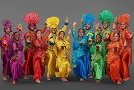

Exploring India's Culture and Heritage
Classical Dance Forms of India
Singhi Chham is a vibrant folk dance from the northeastern Indian state of Sikkim, performed by the Bhutia community. The word “Singhi” refers to the snow lion, a mythical creature that symbolizes power, strength, and courage. The snow lion is also the state emblem of Sikkim, representing the snowy peaks of the Himalayas. The term “Chham” means dance in the local language.
Singhi Chham is a vibrant folk dance from the northeastern Indian state of Sikkim, performed by the Bhutia community. The word “Singhi” refers to the snow lion, a mythical creature that symbolizes power, strength, and courage. The snow lion is also the state emblem of Sikkim, representing the snowy peaks of the Himalayas. The term “Chham” means dance in the local language.
Singhi Chham has its roots in the Bhutia community of Sikkim, deeply influenced by Tibetan Buddhist traditions. The dance is inspired by the snow lion, a mythical creature believed to live in the Himalayas. In Buddhist culture, the snow lion symbolizes joy, power, and fearlessness, and is seen as a protector.
Dancers wear elaborate snow lion masks with white fur and vibrant costumes. Their movements mimic the playful yet powerful nature of the lion. The dance is performed to the rhythm of traditional drums, cymbals, and horns, creating a dramatic and lively atmosphere. It combines storytelling, symbolism, and celebration.
Today, Singhi Chham is not only performed during festivals but also showcased at cultural events to promote Sikkim’s heritage. It remains an important part of the state’s identity and continues to fascinate audiences with its colorful, energetic, and symbolic performance.